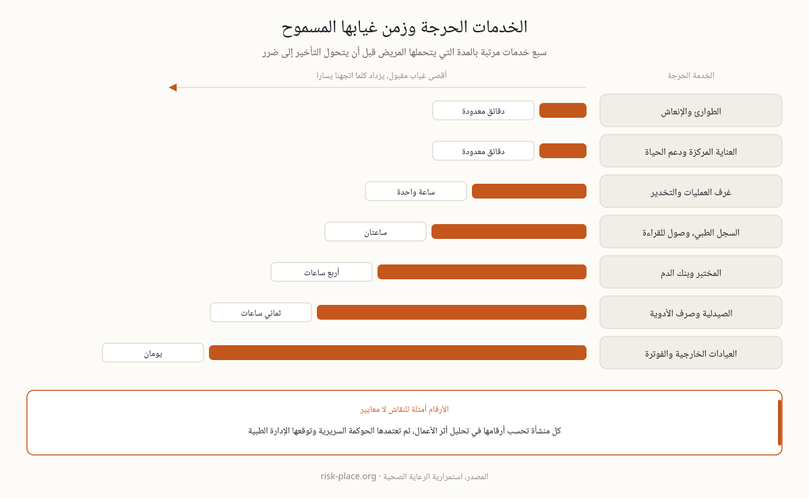

في أغلب القطاعات يتحول التعطل إلى إيراد مؤجل، وفي المستشفى يتحول مباشرة إلى خطر سريري، نتيجة مخبرية تتأخر عن قرار علاجي، وسجل مريض غير متاح لحظة وصف الدواء، وإجراء جراحي يؤجل. لذلك لا يرتب تحليل أثر الأعمال في الصحة الأنشطة بالإيراد وحده، بل باحتمال ضرر المريض عبر الزمن، وهو معيار يقلب الترتيب أحيانا رأسا على عقب، فقد يسبق مختبر صغير خدمة تدر أضعاف إيراده. وتوضع أهداف التعافي بالتحمل السريري لا بالتفضيل التجاري، أي أن الرقم يخرج من الحوكمة السريرية ثم تصادق عليه الإدارة، لا العكس. وهذا سقف إثبات أعلى مما تعتاده القطاعات الأخرى، لأن المنظم الصحي وجهة الاعتماد وشركة التأمين يقرأون الملف نفسه. والأساس الإداري وراء هذه اللغة في صفحة تعريف استمرارية الأعمال وفي مصطلح تحليل الأثر.
الناتج الأول الذي يستحق الجهد قائمة قصيرة بالخدمات السريرية الحرجة، ولكل خدمة أقصى مدة غياب يتحملها المريض قبل أن يتحول التأخير إلى ضرر. الطوارئ والعناية المركزة تقاس بالدقائق، وغرف العمليات بالساعة، والمختبر وبنك الدم بساعات قليلة، والصيدلية بساعات أطول ما دام مخزون الجناح قائما، والعيادات الخارجية والفوترة بأيام. هذه المسافة بين الدقائق والأيام كل ما تحتاجه لتوزيع ميزانية الاستمرارية بلا جدال، فالمولد المزدوج والمسار الورقي يذهبان إلى صدر القائمة لا إلى الخدمة التي رفع مديرها صوته. وتترجم الأرقام إلى ثلاثة مفاهيم عملية، أقصى مدة توقف محتملة لكل خدمة، والحد الأدنى المقبول من الخدمة الذي يبقي الرعاية آمنة بنصف الطاقة، وهدف زمن التعافي لكل نظام يسند تلك الخدمة، وصياغتها مشروحة في صفحة أهداف التعافي. ولا تكتمل الأرقام إلا باعتماد الحوكمة السريرية ومراجعتها سنويا.

خمسة سيناريوهات تغطي أغلب ما يعطل مستشفى في المنطقة، ولكل واحد رهانه السريري واختبار جاهزية لا يقبل إجابة ورقية.
| السيناريو | الرهان السريري | اختبار الجاهزية |
|---|---|---|
| تعطل السجل الطبي الإلكتروني | الطلبات والنتائج والحساسيات وقوائم الأدوية خارج المتناول | نماذج تعطل ومرايا للقراءة فقط في كل جناح، وطاقم تدرب على المسار الورقي |
| برمجية فدية | انقطاع تشغيلي واختراق بيانات مرضى في حدث واحد | تقسيم الشبكة، ونسخ دون اتصال مختبرة بالاستعادة، ومسار إخطار يلبي قانون البيانات الإماراتي |
| فشل المرافق | الكهرباء والتبريد يحملان أجهزة دعم الحياة | تشغيل تلقائي للمولد مختبر تحت الحمل، وعقود وقود بمواعيد تسليم ملزمة |
| انقطاع الإمداد | أدوية ومستهلكات وأكسجين ومشتقات دم | سياسة مخزون بحسب فئة الحرج، وموردون بدلاء مؤهلون سلفا |
| حادث في المنطقة أو تقييد الوصول | الطاقم لا يصل المنشأة والمرضى يواصلون الوصول إليها | بروتوكول تمديد الورديات، وخطة إسكان الطاقم، واتفاقيات تحويل موقعة |
خطة المستشفى التي تعمل ليلة الحادث تتكون من خمسة نواتج ملموسة، وما زاد عليها ورق للمدقق.
ودرس القطاع الأقسى يتكرر في كل مراجعة حادث، المستشفيات التي تتدرب على تعطل السجل الإلكتروني تعامله كإزعاج، والتي لم تتدرب عليه تعامله كطارئ، والفرق بين الحالتين بضعة تدريبات في السنة لا ميزانية إضافية.
الحادث السيبراني في المستشفى ليس انقطاعا فحسب، بل انقطاع تشغيلي واختراق بيانات مرضى معا، ولكل منهما ساعة تعد بطريقة مختلفة، ساعة سريرية تبدأ بالمريض الذي ينتظر، وساعة قانونية تبدأ باكتشاف الاختراق لا باجتماعكم الأول. ولذلك يفصل الرد إلى مسارين منذ الدقيقة الأولى، مسار يبقي الرعاية جارية بالمسار الورقي والمرايا للقراءة فقط، ومسار يحتوي ويحقق ويقرر الإخطار مع المستشار القانوني. والضوابط التي تقرر حجم الضرر هنا قليلة ومعروفة، تقسيم الشبكة بين الأنظمة السريرية والإدارية، ونسخ دون اتصال تختبر بالاستعادة على جهاز حقيقي لا في تقرير، وجرد للأجهزة الطبية الموصولة بالشبكة يعرف أحد عددها ومن يحدثها. وترتيب أول ستين دقيقة في صفحة الساعة الأولى للأزمة، وتفصيل الرد في صفحة الساعات الأولى لبرمجية الفدية (بالإنجليزية)، وقيادة الحدث في تعريف إدارة الأزمات.
يعمل مزودو الرعاية في الدولة تحت أنظمة ترخيص وتفتيش الجهات الصحية، ومعايير اعتماد المستشفيات تطلب صراحة إدارة طوارئ واستمرارية، وتقع جهات الرعاية الحكومية والمنشآت المصنفة حيوية داخل محيط المعيار الوطني NCEMA 7000. وتضيف حماية بيانات المرضى بموجب القانون الإماراتي ساعة قانونية إلى أي حادث سيبراني. والنتيجة العملية أن أدلة الاستمرارية في الصحة تخاطب ثلاثة قراء معا، السريري والتنظيمي وقارئ حماية البيانات. ويسري منطق ISO 22301 على المستشفيات ويتطابق جيدا مع متطلبات الاعتماد، فالمسار العملي لمزود إماراتي نظام إدارة استمرارية أعمال واحد مصمم مقابل الخطر السريري وموثق ليرضي جهة الاعتماد والمنظم ومنطق NCEMA معا حيث ينطبق، والمقارنة بين الإطارين في صفحة المعيار الوطني مقابل ISO 22301، وخريطة من يخضع لأي متطلب في صفحة استمرارية الأعمال في الإمارات.
لا تبدأ العيادة محدودة الموارد بنظام كامل، بل بثلاثة أشياء تغطي الحوادث التي تقع فعلا، إجراءات تعطل السجل عند نقطة الرعاية، ونسخ احتياطية اختبرت استعادتها، وفحص المرافق من مولد ووقود وتبريد. وتنجز الثلاثة في أسابيع لا في سنة. ثم يأتي الإيقاع، تدريب سنوي على الأقل للسيناريو الكامل، وتنشيط قصير على مستوى الجناح كل ربع سنة، لأن الطاقم الجديد ينضم باستمرار والمسار الورقي لا يعمل إلا إذا عرفته أحدث ممرضة في الوردية. وفي الميدان تتكرر أربعة أخطاء بعينها.
ندقق نظام الاستمرارية لديكم مقابل AE/SCNS/NCEMA 7000 والأيزو 22301، ثم نرفع المقاييس التي تقرر البقاء، مع مسوحات المخاطر والمنهجية والتدريب في الموقع حيث تحتاجون.
كيف يعمل التدقيق ←